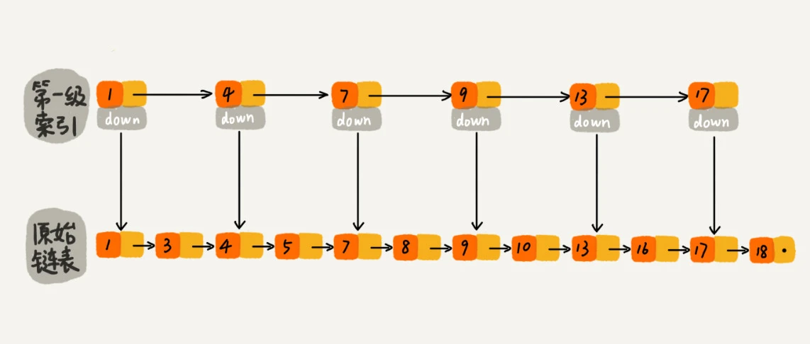
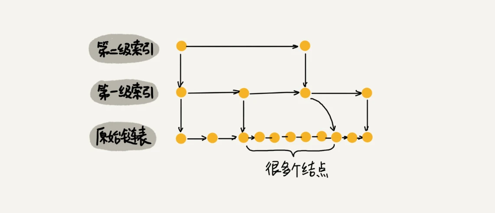

今天来学习跳表。
二分查找底层依赖的是数组随机访问的特性，所以只能用数组来实现。如果数据存储在链表中，对链表稍加改造，也可以支持类似“二分”的查找算法，这种改造之后的数据结构叫做跳表。这里我感觉，每一种数据结构的出现都有它出现的历史背景，但这也同时也决定了它的应用场景。
如何理解“跳表”
对于一个单链表来讲，即便链表中存储的数据是有序的，如果要想在其中查找某个数据，也只能从头到尾遍历链表。时间复杂度为\(O(n)\)。
那么如何提高效率？比如像图中那样，对链表建立一级“索引”。每两个结点提取一个结点到上一级，把提取出来结点的这一层叫做索引或索引层。图里的down表示down指针，指向下一级结点。

这里的down不是特别明白，是类似单链表结点中next指针，也单独开辟一块空间，来存储down指针么？
如果现在要查找某个结点，比如16。可以现在索引层遍历，当遍历到索引层中为13的结点时，通过node->next发现下一个结点是17，那么要查找的结点16肯定就在这两个结点之间。然后通过索引层的down指针，下降到原始链表这一层，继续遍历。这时候，只需要在遍历2个结点，就可以找到值等于16的这个结点了。这样，原来如果要查找16，需要遍历10个结点(1->3->4->5->7->8->9->10->13->16)，现在只需要遍历7个结点(1->4->7->9->13->13->16)。
加一层索引之后，查找一个结点需要遍历的结点个数减少了，也就是说查找效率提高了。(利用空间换时间的思想。
当链表的长度n比较大时，在构建索引之后，查找效率的提升就会非常明显。
这种链表加多级索引的结构，就是跳表。
时间复杂度
在一个具有多级索引的跳表中，查询某个数据的时间复杂度是多少？
如果链表里有n个结点，会有多少级索引？
第一层索引，\(\frac{n}{2}\)个结点，第二层索引，\(\frac{n}{4}\)个结点...以此类推，第k层索引，\(\frac{n}{2^k}\)个结点，当\(\frac{n}{2^k}=2\)时，即\(k=log_2n-1\)时，不需要再建立索引。因此，如果链表里有n个结点，会有\(log_2n-1\)级索引。加上原始链表这一层，整个跳表的层数为\(log_2n\)。
在跳表中查询某个数据的时候，如果每一层都要遍历m个结点，那么在跳表中查询一个数据的时间复杂度就是\(m*logn\)。
这个m值是多少？按照前面这种索引结构，每一级索引都最多只需要遍历3个结点，也就是m=3。自己理解，前面这种索引结构是每两个结点提取一个结点到上一级，因此m=3。如果索引结构按照每三个结点提取一个结点到上一级，则m=4。也就是说，如果说索引结构按照每n个结点提取一个结点到上一级，则m=n+1。
所以在跳表中查询任意数据的时间复杂度就是\(logn\)。
空间复杂度
假设原始链表大小为n，那第一级索引为\(\frac{n}{2}\)个结点，第二级索引为\(\frac{n}{4}\)...以此类推，原始链表的大小为n，每2个结点抽1个，每层索引的结点数： \[
\frac{n}{2},\frac{n}{4},\frac{n}{8}...8,4,2
\] 很明显，这是一个公比为\(\frac{1}{2}\)的等比数列，根据求和公式，可以知道，空间复杂度为O(n)。 \[
S_n=\frac{a_1*(1-q^n)}{1-q}=\frac{a_nq-a_1}{q-1}=\frac{2*\frac{1}{2}-\frac{n}{2}}{\frac{1}{2}-1}=(n-2)
\] 如果，原始链表的大小为n，每3个结点抽1个，每层的结点数： \[
\frac{n}{3},\frac{n}{6},\frac{n}{9}...9,6,3
\] 根据求和公式，公比为\(\frac{1}{3}\) \[
S_n=\frac{a_1*(1-q^n)}{1-q}=\frac{a_nq-a_1}{q-1}=\frac{3*\frac{1}{3}-\frac{n}{3}}{\frac{1}{3}-1}=\frac{1}{2}(n-3)
\] 尽管空间复杂度依然为\(O(n)\)，但是相比之下，还是减少了一半的索引结点存储空间。
实际上，在软件开发中，不必太在意索引占用的额外空间。在讲数据结构与算法时，习惯性地把要处理的数据看成整数，但是在实际的软件开发中，原始链表中存储的有可能是很大的对象，而索引结点只需要存储关键值和几个指针，并不需要存储对象，所以当对象比索引节点大很多时，那索引占用的额外空间就可以忽略了。
高效的动态插入和删除
跳表不仅支持查找操作，还支持动态的插入、删除操作，而且插入、删除操作的时间复杂度也是\(O(logn)\)。这个很好理解，查找时间复杂度为\(O(logn)\)，单纯插入和删除的时间复杂度为\(O(1)\)。根据时间复杂度求和公式，总复杂度等于量级最大的那段代码的复杂度，所以插入、删除操作的时间复杂度为\(O(logn)\)。
需要注意的是，在删除操作中，如果这个结点在索引中也有出现，除了要删除原始链表中的结点，还要删除索引中的结点。
跳表索引动态更新
当不停地往跳表中插入数据时，如果不更新索引，就有可能出现某2个索引结点之间数据非常多的情况。极端情况下，跳表还会退化成单链表。

作为一种动态数据结构，需要某种手段来维护索引与原始链表大小之间的平衡，也就是说，如果链表中结点多了，索引结点就相应地增加一些，避免复杂度退化，以及查找、插入、删除操作性能下降。
红黑树、AVL数这样的平衡二叉树，是通过左右旋的方式保持左右子树的大小平衡，而跳表是通过随机函数来维护前面提到的“平衡性”。
通过一个随机函数，来决定将这个节点插入到哪几级索引中，比如随机函数生成K，那么就将这个结点添加到第一级到第K级这K级索引中。随机函数的选择很有讲究。从概率上来讲，能够保证跳表的索引大小和数据大小平衡性，不至于性能过度退化。
解答开篇
为什么Redis要用跳表来实现有序集合，而不是红黑树？
Redis中的有序集合是通过跳表来实现的，严格点讲，还用到了散列表。Redis中的有序集合支持的核心操作主要包括：
- 插入一个数据
- 删除一个数据
- 查找一个数据
- 按照区间查找数据（比如查找值在
[100, 356]之间的数据） - 迭代输出有序序列
其实，插入、删除、查找以及迭代输出有序序列这几个操作，红黑树也可以完成。时间复杂度和跳表是一样的。但是，按照区间来查找数据这个操作，红黑树的效率没有跳表高。对于按照区间查找数据这个操作，跳表可以做到\(O(logn)\)的时间复杂度定位区间的起点，然后在原始链表中顺序往后遍历就可以了。
其次，相比红黑树，跳表更容易代码实现。
还有，跳表更加灵活，可以通过改变索引构建策略，有效平衡执行效率和内存消耗。
不过，跳表也不能完全替代红黑树。因为红黑树比跳表的出现要早一些，很多编程语言中的Map类型都是通过红黑树来实现。但是跳表并没有现成的实现。
课后思考
如果每三个或者五个结点提取一个结点作为上级索引，对应的在跳表中的查询数据的时间复杂度是多少？
如果是每三个结点提取一个结点作为上级索引，\(\frac{n}{3^k}=3\)，此时\(k=log_3n-1\)，算上原始链表，层数为\(log_3n\)，每一层需要遍历4个结点，所以时间复杂度为\(O(n)=4*log_3n\)，忽略系数，\(O(n)=logn\)。同理每五个结点。